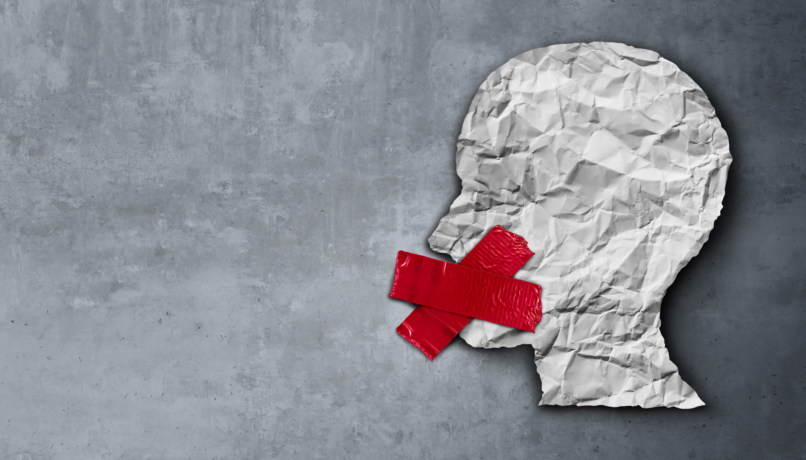
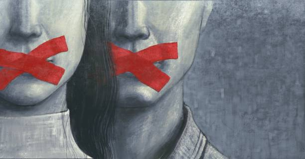

In a day and age where speech has gone digital, questions about censorship begin to rise. The birth of the Interenet and online spaces has brought a voice to everyone, not just news outlets and mainstream media. So what happens when we encounter ideas that may be potentially harmful? Is censorship the right route? Or does free speech protect all speech?

| Pros | Cons |
|---|---|
| Takes away minsinformation and harmful content. | Puts government in control of deciding what is and isn't harmful content |
As humans, often when we face ideas or issues we don’t like or disagree with, our first reaction is to look away or block it out. In online spaces, we often block someone who posted something we don’t agree with or in some cases even attempt to report them. One of the most recent cases of widescale censorship in a modern-day country is currently ongoing in Russia. Overreach and dictatorship have allowed the government to decide what was allowed online and what wasn’t. People are sitting in Russian jails for mere criticisms of the government or saying something that goes against their current leader. Things that otherwise would be ignored here in the US. Another current example can be found in China, which has banned most western based social media, or North Korea, where the internet is banned altogether. Silencing opinions and ideas we don’t agree with only causes harm in our rationality. Censorship, at its core, creates more issues than it solves by stripping away opportunities to challenge ideas we don’t agree with. Critical thinking is a necessity in a day and age where every opinion matters. When censorship takes place, the opinions and ideas of those who censor us are forced to be taken as the ‘right opinion’. Often, censorship is hidden behind good intentions, such as protecting minorities, children, and religious groups from hateful ideas either directly or indirectly targeting them. The intentions are pure, but the precedent is dangerous. Who decides what is good and what isn’t? If we wish to protect the people, we claim we are trying to, we must understand that it begins with counter-speech, not censorship.
The infamous novel 1984, written by George Orwell and published in 1949, talks of media censorship as part of government ‘thought control’. While many read this as a dystopian novel, the truth is that it’s closer to reality than we think. In April of 2024, a law was passed that would censor the social media TikTok by completely banning it from US servers. Merely because it was Chinese owned. A long and arduous legal battle did nothing, and the law stood. The question that they posed was this: “What is more important, free speech, or national security?” The government argued that the app pushed pro-Chinese propaganda, and that the only way to protect Americans from it was to ban it. The government set a precedent for a very dangerous idea: they now could completely remove anything online if they considered it a danger or foreign propaganda to the American people. This law that a lot of people missed or didn’t care about, could very well become the backbone for censoring any other social media platform. Many ask, what about the children? Should we not allow certain ideas or opinions to be prevalent on the Internet because a child might see it? The answer is no. Children are naturally curious, however protecting them starts with parents. Parents who moderate their children’s activities online will have no worries about what they might come across. At the end of the day, freedom of thought and expression always comes with personal responsibility, and we all must be responsible for ourselves and how we handle disagreements both offline and online. What should be censored? Illegal content of any type should never, and will never be tolerated. Abusive content that would get you arrested offline, will certainly not be tolerated online either.
At the end of the day, freedom of thought and expression always comes with personal responsibility, and we all must be responsible for ourselves and how we handle disagreements both offline and online. At times, we need to take a step back and decide. Are we are going to allow ourselves to be affected by the thoughts and opinions of those around us, or should we acknowledge the opportunity to learn about the people around us?